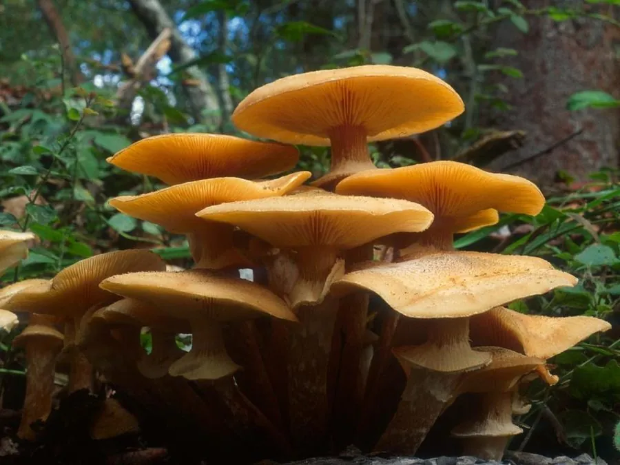

真菌 · 真菌界
蜜环菌 Armillaria mellea

菌盖蜜黄色、菌柄带菌环的丛生蘑菇，能寄生树木根部，菌丝会发光，是东北名菜“小鸡炖蘑菇”的榛蘑。
- 分类
- 门担子菌门纲伞菌纲目伞菌目科膨瑚菌科属蜜环菌属
- 栖息环境
- 针叶林和阔叶林的树桩、倒木和树根上，丛生
- 地理分布
- 北半球温带和寒温带林区广泛分布，中国各地林区均有
- 保护级别
- 暂无评估（IUCN 未评估，中国未列入重点保护名录）
物种志
蜜环菌是担子菌门伞菌目的木腐兼寄生真菌，子实体丛生。菌盖呈半球形至平展，直径 3–12 cm，表面蜜黄色至黄褐色，中央常带细鳞片；菌褶白色至淡黄色，延生；菌柄细长，上部有膜质菌环；孢子印白色。它的菌丝体在暗处会发出微弱的荧光。
蜜环菌广泛分布于北半球的针叶林和阔叶林，既能分解枯木，也能寄生在树木根部，引起根腐病，对林业有一定危害。它常成丛生长在树桩、倒木和树根上，夏秋季出菇。在中国东北，蜜环菌是“小鸡炖蘑菇”中榛蘑的重要来源之一，味道鲜美。但野生蘑菇必须充分加热后食用，且不要与不明菌类混采；蜜环菌的菌丝在暗处会发光，是少数能发光的真菌之一。
形态与习性
- 菌盖直径 3–12 cm，蜜黄色至黄褐色
- 菌褶白色至淡黄色，延生
- 菌柄细长，上部有膜质菌环
- 孢子印白色
- 发光菌丝体在暗处发出微弱荧光
- 食用性可食，必须充分加热
- 危害可寄生树木根部，引起根腐病
趣味知识
- 蜜环菌的菌丝在暗处会发出微弱的荧光。
- 它既能分解枯木，也能寄生树木根部，引起根腐病。
- 在中国东北，蜜环菌是“小鸡炖蘑菇”里榛蘑的重要来源。
- 野生蘑菇必须充分加热后再食用。